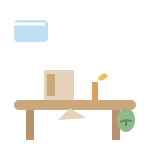

🍅 番茄钟
专注每一刻 · 今天也要加油呀
🌿 切换背景
⏰ 计时
📋 任务
📊 统计
💭 笔记
⏳ 倒计时
⏱ 累计计时
25:00
分钟 / 每轮
开始
暂停
重置
本次专注的项目（大项目 / 子任务）
未选择大项目
子任务 · 通用
音频（计时进行时播放，暂停同步暂停）
🔕 关闭
🌲 森林白噪音
🌧 雨声白噪音
🎹 钢琴轻音乐
新建大项目
添加
标签（逗号分隔，或点选快捷标签）
行测
申论
常识
筛选查看对应大项目下的子任务
全部大项目
今日
本周
本月
今日总专注
0 分钟
按标签筛选统计
全部
📊 分项目统计
📤 导出学习记录文本
记录学习心得 / 反思 / 感悟
保存笔记
📝 我的笔记
所有数据保存在本机浏览器 localStorage 中